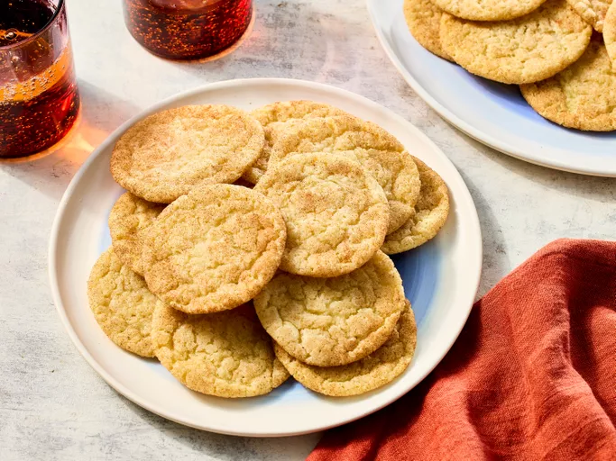
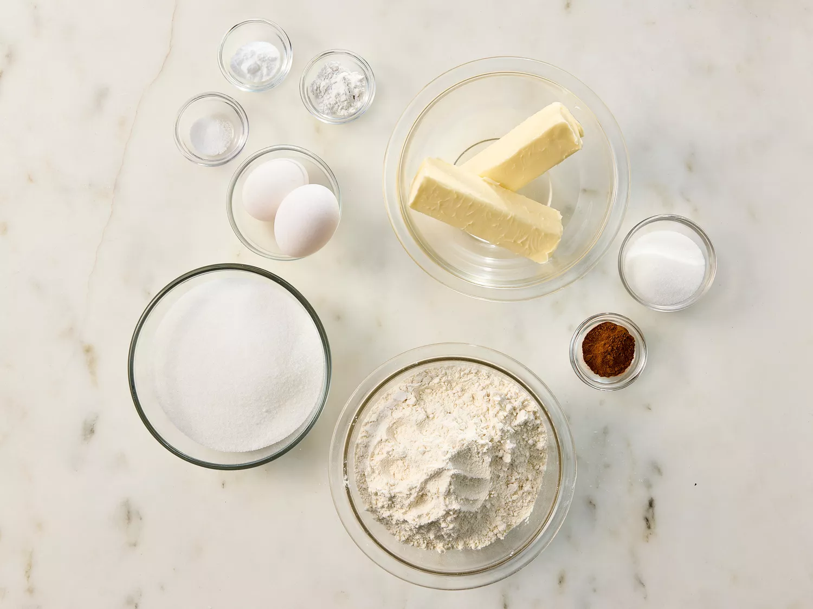
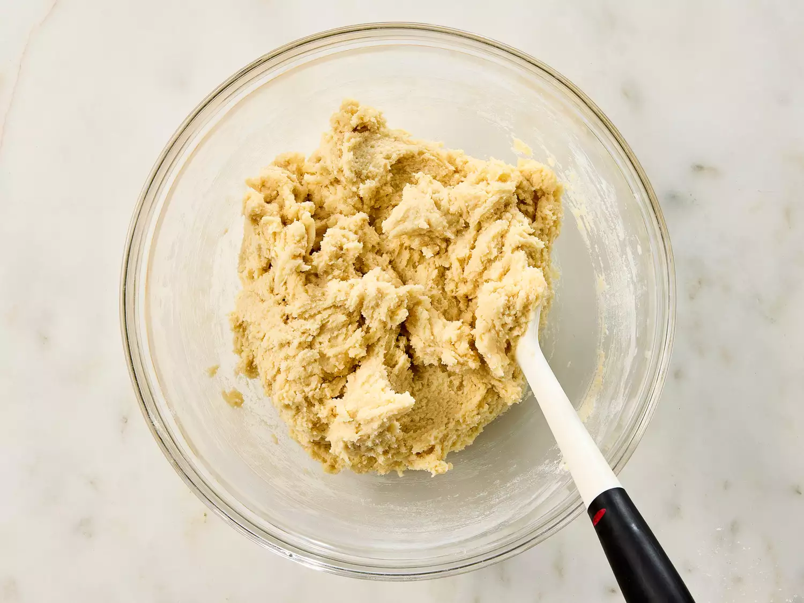
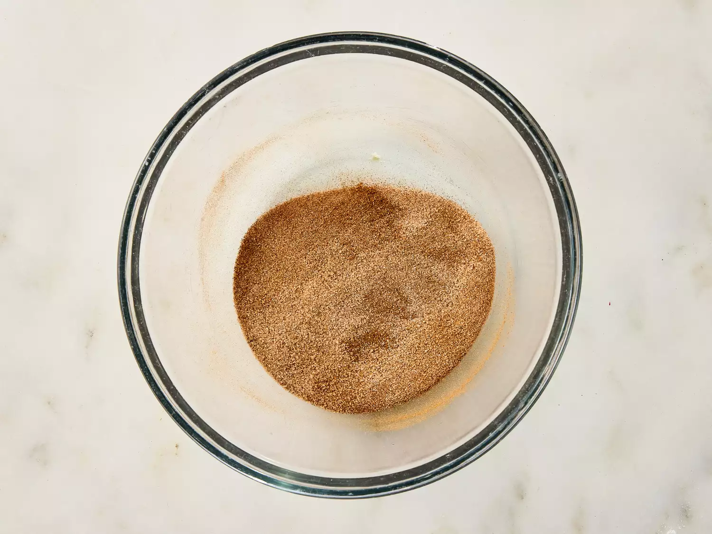
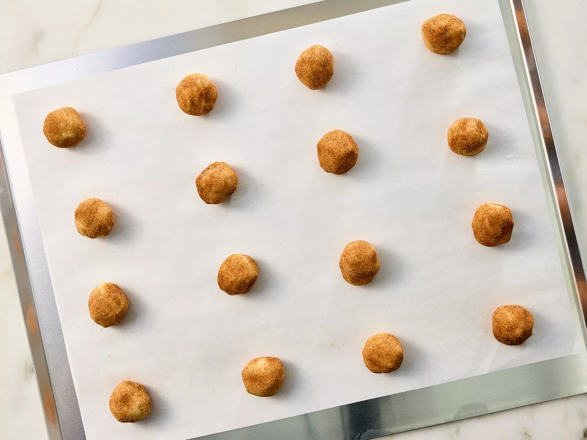
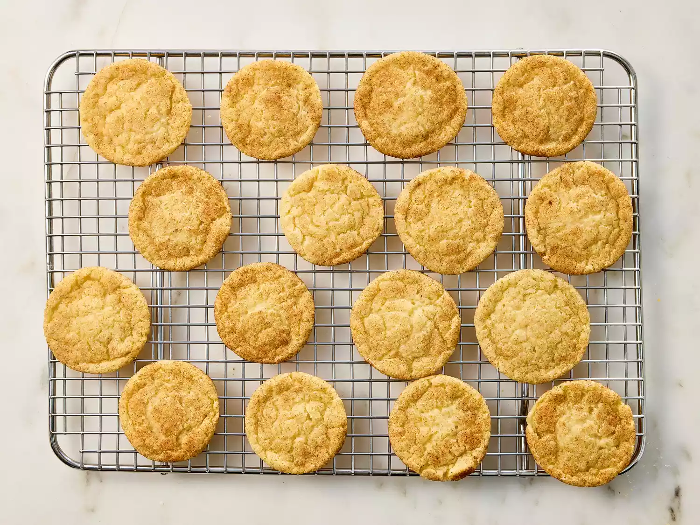

Home
Snickerdoodle Cookies

Description
This easy snickerdoodle recipe that everyone loves is from my great-grandma! The cookies are soft and full of cinnamon flavor.
Ingredients
Cookies
- 1 ½ cups white sugar
- 1 cup softened butter
- 2 large eggs
- 2 ¾ cups all-purpose flour
- 2 teaspoons cream of tartar
- 1 teaspoon baking soda
- ¼ teaspoon salt
Coating
- 2 tablespoons white sugar
- 2 teaspoons ground cinnamon
Directions
- Gather the ingredients. Preheat the oven to 400 degrees F (200 degrees C). Line a baking sheet with parchment paper or lightly grease.

- To make the cookies: Beat white sugar, butter, and eggs together in a large bowl using an electric mixer until smooth and creamy. Combine flour, cream of tartar, baking soda, and salt in a separate bowl; stir into creamed butter mixture until dough holds together.

- To make the coating: Mix white sugar and cinnamon in a small bowl until well combined.

- Form dough into balls (about 2 teaspoons in each ball), then roll in cinnamon-sugar coating. Place dough balls about 2 inches apart onto the prepared baking sheet.

- Bake in the preheated oven on the center rack for 7 minutes. Allow cookies to cool on the baking sheet for 5 minutes before transferring to a wire rack to cool completely.
